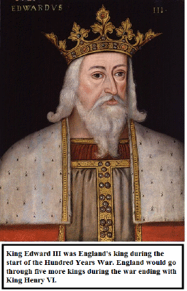

Hundred Years War
Written By: Matthew Balogh
According to the Centers for Disease Control and Prevention the current average life expectancy for a U.S. citizen is 78.7 years. Very few people get to live to be much over 100 years old. Think about how long your life is and all the things you do in your life. What would happen if there was a war that lasted your entire life? Although it is a concept that is hard to understand, it has happened before. The war between England and France in the mid 14th century heading well into the 15th century lasted for 120 years. That is just about the length of the life of the longest living person on Earth. At that time, the life expectancy was around fifty years. The people who ended the war were fighting over things that their parents and grandparents fought about. During this war, England went through five kings, starting with King Edward III and ending with King Henry VI. France also had five kings during the time of the Hundred Years war, starting with King Philip VI and ending with King Charles VII. With all of these rulership changes during this drawn out war, military tactics and political ideas changed drastically. Both sides had clear victories and startling defeats, but in the end one side would prevail because of the determination of a woman who led them to victory. This war was so fascinating because it dragged out so long, due to the particular battles that helped each country in the campaign.
So how did this life-lasting war begin? At that time, Europe had just begin to come out of the dark ages with the end of the Black Plague, sometimes referred to as the black death. England seemed to have more power than any of the other countries in Europe. King Edward III of England believed that he had enough power to control all of Europe. One of his biggest goals was to take control of France. Although he knew it was not going to be an easy task, he tried to take over France as ruler by starting with the duchy of Aquitaine, which was a small section of modern day southwestern France. Initially King Edward III kindly offered France an option of peaceful surrender. Just as expected, France affirmed King Edward III’s beliefs that they did not want England to rule over them. King Edward III then began his conquest at the Battle of Sluys.
Battle of Sluys
This was not a particularly interesting battle, however the result would give England a huge head start on their campaign. Leading up to the battle, a series of events occurred. The French had been collecting over a hundred sailboats in preparation for an invasion on England. Upon meeting this fleet of boats, the English were vastly outnumbered. But King Edward III's fleet met up with 50 more sail boats under the command of Robert de Morleythe, who was King Edward III's commander of the North sea off of the coast of Flanders. On June 23, 1340, when he anchored his fleet at Blankenberge he had a larger fleet than the French did. On June 24, the English begin an attempt to take control of the currently named English Channel which is the shortest span between England and France. This battle is a naval battle called the Battle of Sluys that takes place in the channel off the coast of the town of Sluys. The English completely demolished the French Naval Fleet in a decisive victory. The notorious English longbow men attack with showers of arrows from atop their decks behind the safety of the ship walls. After this enormous victory, England would control the English Channel for the remainder of the War giving them easy access to the French coastline, particularly the town of Sluys for which this naval battle was named after. This control also created a safety barrier keeping the French from attacking the English on English soil.
Battle of Crécy
Many battles occur in six years, but there were few decisive victories. However, the next battle that took place, the English were able to produce the kind of victory they had wanted all along. This battle took place in the French town of Crécy. After taking over the English Channel in the Battle of Sluys, King Edward III battered France from the north repeatedly with little effectiveness. He first attempted to attack France through Belgium, specifically the Flanders, but failed because of weak financial support which caused him to go a different route. In this new route he was able to win the battles of Caen and the Battle of Blanchetaque which took place in their respective towns. After word of this reached King Philip VI, he sent his troops to try to corner Englands forces inbetween the Seine and the Somme Rivers. However, English forces were able to make an escape route to the town of Crécy. This is where the Battle of Crécy took place. Somewhere around 10,000–15,000 English troops and somewhere between 20,000–25,000 French troops met in battle. Later in the war the French were known to use cannons, but at this time, they had not developed that technique. However, the English had a large “gun” which acted like a cannon, and was able to clear out the French lines with ease who were wiped out due to the power of the canon and their position wide out in the open. By this point, the English think they have a pretty good chance of winning the war. However, the war is far from over. They have no way of knowing that it has just begun, and that none of them will be alive when it is finished.
Battle of Poitiers
Currently, the English and the French are fighting in a war called the Edwardian War. This is a sub-war of the Hundred Years war. Most of the battles fought in the Edwardian War are English victories. Then during the Caroline War, changes occur, and the English come out empty handed. Even in the Lancastrian War, England has no startling victories. The Battle of Poitiers was the last decisive
English victory during the Edwardian War. It is surprising that they were able to do it, because the English were outnumbered 4 to 1 in their archers and 3 to 1 in their infantry. The English were able to leave with a little more than a few hundred causalities whereas the French had well over 2,000. Recorded in the writings of Sir John Chandos, there were many negotiations between the English and the French to avoid the bloody conflict that they thought would happen at Poitiers. The English thought they were going to be slaughtered. The French thought so too, but they did not underestimate the power of the English. In the end though, both sides ended with a quote saying “I think that it best so, and that God will be gracious to us if the battle be avoided in which so many valiant men will be slain.”
Joan of Arc
Up to this point in the war, there was great dispute over who had the rights to the French throne. France had lost almost every major battle and was still having great troubles recovering from the Black Death that had swept across Europe less then a fifty years before, killing half of the French population. Upon the birth of Joan of Arc the French King was Charles VI who was making very poor military decisions. By the time he died, he had three distant relatives who were alive, but they had other medical issues. His only close relatives alive were his brother Duke Louis and his cousin John the Fearless, who constantly fought over the throne. However, in order to break up a line of bad rulership, the French did not officially reign either as King. Through great military tactics and ideas, Joan of Arc was able to gain rank in the French Army to have great political power. She was able to rise the spirits of the French Troops and lead them to victories during the Lancastrian War. After her rise to power, England would only have one more major victory in the War. Even with a major victory, the English still had many years of defeat and were very angry of Joan of Arc's existance. They captured her at Burgundians and brought her to England. Here she was tried for witch craft, found guilty and executed in a public square. Her death rallied the French troops and led them to a series of enormous victories.
Battle of Agincourt
 The
Battle of Agincourt would later be known as one of the greatest
English Victories of the Hundred Years War. It
was the only English victory that took place in the Lancastrian War,
This
was
in part due to the English Longbow, which could
be knocked and shot three times faster than the current
French Genoese
Bow
(Cross Bow) could
shoot. This decisive victory would increase King Henry V of England’s
popularity. After landing in France, he intended to quickly seize
Harfleur, march alongside the Seine river down pas Rouen and Paris
before turning south for Bordeaux. However, this took much longer
than
expected,
lasting six weeks and a cost him the lives of a third of his army.
After being told to remove his army and return to England, the King
decided to march his troops through Normandy, hoping that with no
resistance, he could claim to his people that God approved of his
claims to the Dutchy.
The
Battle of Agincourt would later be known as one of the greatest
English Victories of the Hundred Years War. It
was the only English victory that took place in the Lancastrian War,
This
was
in part due to the English Longbow, which could
be knocked and shot three times faster than the current
French Genoese
Bow
(Cross Bow) could
shoot. This decisive victory would increase King Henry V of England’s
popularity. After landing in France, he intended to quickly seize
Harfleur, march alongside the Seine river down pas Rouen and Paris
before turning south for Bordeaux. However, this took much longer
than
expected,
lasting six weeks and a cost him the lives of a third of his army.
After being told to remove his army and return to England, the King
decided to march his troops through Normandy, hoping that with no
resistance, he could claim to his people that God approved of his
claims to the Dutchy.
Battle of Castillon
After 120 years of fighting, the battles of the Hundred Years War come to an abrupt end with the Battle of Castillon, which occurred on July 17, 1453. Here, the French assert their claims on their country and become the official victors of the war. The only original French territories that England still had and still has to this day is the town of Calais. The Battle of Castillon occurred during the Lancastrian War which was a sub-war to the hundred years war. The French won the majority of the battles which took place during this era. King Charles VII was the King of France during most of this sub-war, and was known for his brilliant battle tactics. Feared and famous military leaders John Talbot, and Earl of Shrewsbury landed near Bordeaux with a force of 3,000 men on July 16. They were greated by 7,000 French infantry and over 300 French cannons of various sizes. Here Earl of Shrewsbury dies of a chest wound. Upon great loses, Talbot left Bordeaux and arrived at Libourne by sunset with only 800 archers and 500 men at arms. Ignoring the reports his messengers sent him, he pushes on in the morning hoping that the French were retreating back at Bordeaux. As they made their way farther into France, they ran full Force into the French army at Castillon. Although they were outnumbered, Talbot ordered his men to fight head on. They hacked down to the ground within an hour. The only Englishman who remained mounted in battle had done inside work for the French army when he was a captive in Normandy. Talbot and his son die in the battle. Talbot's horse dies due to a projectile wound, and Talbot falls off and is killed by a Frenchman with a battle ax. Within in three months of the battle, the hundred years war would be over. The only French territory that would stay in English hands would be the town of Calais.
These specific battles showcase the reasons that the war dragged out as long as it did. Although the English were able to win a large majority of the battles, they were bad at taking control of the situation and forcing on. They also had great financial problems and were to risky with the lives of their men. Their army dropped in size significantly during the first thirty years of the War. When it seemed that the French were done for, the French regathered and heightened their spirits under the leadership of Joan of Arc. Her death brought the final blow that would let the French win the war.
Citations:
"Battle of Agincourt." British Battles. N.p., n.d. Web. 3 May 2013.
<http://www.britishbattles.com/100-years-war/agincourt.htm>.
The Battle of Agincourt: French prisoners. N.d. British Battles. Web. 3 May 2013.
<http://www.britishbattles.com/100-years-war/agincourt.htm>.
"Battles Timeline of the One Hundred Years War." Middle Ages. N.p., n.d. Web. 26 Apr. 2013.
<http://www.middle-ages.org.uk/battles-timeline-one-hundred-years-war.htm>.
Gormley, Larry, ed. Ohio State University Department of History. Ohio State University, 2007. Web.
26 Apr. 2013. <http://ehistory.osu.edu/osu/archive/hundredyearswar.cfm?CFID=34852326&CFTOKEN=96571234&jsessionid=46304b795c9e422704001726b12263a732c3>.
Wagner, John A. "Castillon, Battle of (1453)." Hundred Years War. By Wagner. Westport: Greenwood
Press, 2006. Print.
"Life Expectancy." Centers for Disease Control and Prevention. N.p., 2010. Web. 13 May 2013.
<http://www.cdc.gov/nchs/fastats/lifexpec.htm>.
"A
Knight of Medieval Madness." Blogspot. N.p., n.d. Web. 18
May 2013.
<http://inviteanddelight.blogspot.com/>.
"King
Edward III from NPG." Wikipedia.
N.p., n.d. Web. 18 May 2013.
<http://en.wikipedia.org/wiki/File:King_Edward_III_from_NPG.jpg>.
"Lenepveu,
Jeanne d'Arc au siège d'Orléans." Wikipedia.
N.p., n.d. Web. 18 May
2013. <http://commons.wikimedia.org/wiki/
File:Lenepveu,_Jeanne_d%27Arc_au_si%C3%A8ge_d%27Orl%C3%A9ans.jpg>.
"Battle
of Crecy Froissart." Wikipedia.
N.p., n.d. Web. 18 May 2013.
<http://en.wikipedia.org/wiki/File:Battle_of_crecy_froissart.jpg>.
"Battle
of Sluys." Wikipedia.
N.p., n.d. Web. 18 May 2013.
<http://commons.wikimedia.org/wiki/File:BattleofSluys.jpeg>.
"Battle of Castillon." Wikipedia. N.p., n.d. Web. 19 May 2013.
<http://en.wikipedia.org/wiki/File:Battle_of_Castillon.jpg>.
"Battle
of Poitiers." Wikipedia.
N.p., n.d. Web. 19 May 2013.
<http://en.wikipedia.org/wiki/File:Battle-poitiers%281356%29.jpg>.
"Joan
of Arc." Wikipedia.
N.p., n.d. Web. 19 May 2013.
<http://en.wikipedia.org/wiki/File:Joan_of_arc_miniature_graded.jpg>.
"Joan
of Arc's Death at the Stake." Wikipedia. N.p., n.d. Web.
19 May 2013.
<http://en.wikipedia.org/wiki/
File:Stilke_Hermann_Anton_-_Joan_of_Arc%27s_Death_at_the_Stake.jpg>.